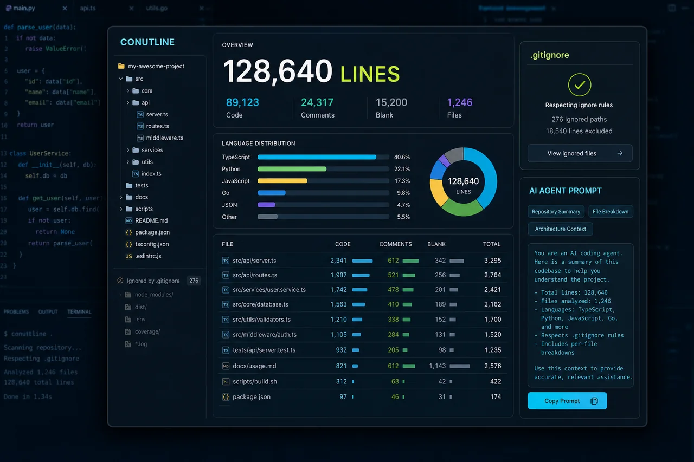

dev@portfolio:~/projects/conutline$ conutline scan . --agent-context
[INFO] reading .gitignore rules...
[INFO] classifying source files...
[DONE] report generated
CODEBASE STATISTICS / 2026
conutline
从代码行数、文件明细到 AI Agent 提示的一站式代码库统计工具

conutline 是一款面向开发者与 AI 编程工作流的代码库统计工具。它不仅汇总代码、注释与空白行，还能下钻到每个文件查看语言、大小和行数构成；扫描过程遵循 .gitignore，自动排除依赖、构建产物与无关文件，并可把统计结果整理成适合 AI Agent 使用的仓库概览提示，让 Agent 在开始任务前更快理解项目规模、结构与重点文件。
产品设计 / 统计模型 / 忽略规则 / CLI 与报告体验 / AI Agent 上下文设计
CLIStatic AnalysisGitignore RulesFile MetricsAI Agent Context
总数不是答案。
代码行数工具很容易停留在一个总数，但总数无法回答代码集中在哪些目录、哪些文件异常庞大、注释比例如何等实际问题。与此同时，扫描器必须正确处理嵌套 .gitignore、不同语言与生成文件；若直接把冗长的文件清单交给 AI Agent，又会浪费上下文并掩盖真正重要的信息。
把仓库压缩成上下文。
扫描阶段以文件为最小统计单元，识别语言并分别计算代码、注释与空白行，再按目录和语言聚合；忽略层复用 Git 风格匹配语义，结合各级 .gitignore 决定是否进入目录或统计文件。报告同时提供总览与逐文件明细，并将规模、语言分布、关键目录、大文件和忽略范围压缩成结构化提示，供 AI Agent 在有限上下文中快速建立代码库认知。
CORE_IMPLEMENTATION.log
src/统计总代码行、注释行、空白行、文件数与目录数
CORE 01scanner/按语言、目录和扩展名聚合代码规模与占比
RULE 02src/逐文件展示语言、文件大小以及代码、注释、空白行明细
OUTPUT 03scanner/遵循根目录与嵌套目录中的 .gitignore 规则，排除依赖和构建产物
CORE 04src/识别超大文件、代码集中目录与注释比例等值得关注的信息
RULE 05scanner/生成精简、结构化的仓库概览提示，帮助 AI Agent 快速理解项目
OUTPUT 06reports/同时适合终端查看、自动化脚本与可复制报告等使用场景
CORE 07# Repository overview
purpose: codebase statistics
focus:
- language distribution
- high-impact files
- ignored boundaries
- context-efficient summary
status: ready_for_agentReport is ready for humans, scripts, and AI agents.